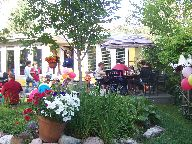

2007: Family Time
Esta carta também está disponível em Ingles.
É 24 de Dezembro, nós estamos em Oklahoma e vamos viajar para a costa do Atlantico Sul em dois dias. Antes de sairmos de Edmonton o Daniel pegou uma gripe muito forte, voar com um menino doente foi um pesadelo. O Daniel se recuperou da gripe mas passou para o Scott e para mim. Nós estamos com esperança de melhorar antes do longo vôo para Porto Alegre. Nosso plano é passar quase uma semana em uma pousada em Ponta das Canas na ilha de Florianópolis e o restante do tempo na casa de minha mãe em Xangrilá. Nós estaremos de volta em Edmonton no dia 11 de Janeiro.
 No verão de 2007 nós tivemos a oportunidade de passar
bastante tempo com família em Alberta. Meu irmão Marcos
veio me ajudar com um projeto de reforma do porão de casa que
está em progresso por mais de dois anos. Juntos nos aceleramos
o projeto. Depoi s o meu sobrinho Tiago e minha irmã Salete
vieram e então nós fizemos um tour das Montanhas
Rochosas que incluiu uma estadia no Dkoki Lodge, um hotel
rústico que só é acessível por uma
caminhada de 14 Km. A Gagá e o Grandpa vieram para Edmonton
para ficar com o Daniel enquanto nós estávamos
viajando.
No verão de 2007 nós tivemos a oportunidade de passar
bastante tempo com família em Alberta. Meu irmão Marcos
veio me ajudar com um projeto de reforma do porão de casa que
está em progresso por mais de dois anos. Juntos nos aceleramos
o projeto. Depoi s o meu sobrinho Tiago e minha irmã Salete
vieram e então nós fizemos um tour das Montanhas
Rochosas que incluiu uma estadia no Dkoki Lodge, um hotel
rústico que só é acessível por uma
caminhada de 14 Km. A Gagá e o Grandpa vieram para Edmonton
para ficar com o Daniel enquanto nós estávamos
viajando.
Como o Daniel fez 3 anos em Agosto, ele se formou na escola para "meninos pequenos" e passou para a escola para "meninos grandes". Ele estava confuso e frustrado por uns dois meses por causa da transição, mas agora ele esta gostando muito da nova escola.
Nós vimos a Emily, a irmã do meio do Daniel, duas vezes este ano. Nós fomos visitá-los em Calgary em Maio e eles vieram nos visitar em Edmonton em Novembro. O Daniel adora brincar com a irmã. Ultimamente o Daniel está perguntando muito sobre a mamãe dele e sobre a irmã mais velha Mac. Pelo que eu consigo entender, a maior preocupação dele é ser igual as outras crianças na escola. Todas as outras crianças na classe dete tem uma mamão. Portanto o Daniel quer ter uma mamãe também. ás vezes ele pede para o Papar ser a mamãe dele.

 Nós tivemos uma festa de quintal muito legal para o terceiro
aninversário do Daniel em Agosto. Muitos dos amigos dele vieram
para a festa. A Gagá e o Grandpa trouxeram muitas
decorações mexicanas e uma grande piñata para uma
festa completa com tema mexicano.
Nós tivemos uma festa de quintal muito legal para o terceiro
aninversário do Daniel em Agosto. Muitos dos amigos dele vieram
para a festa. A Gagá e o Grandpa trouxeram muitas
decorações mexicanas e uma grande piñata para uma
festa completa com tema mexicano.
O ponto alto do ano para o Daniel foi uma viagem de dois dias para visitar o Museu dos Dinossauros em Drumheller. Nós pedimos emprestada a casa com rodas do Grandpa e fomos com o Daddy, Papai, Tio Marco, e o Tiago. O Daniel falou sobre estes dois dias pelo resto do ano. Portanto nós estamos planejando mais aventuras na casa com rodas do Grandpa no próximo verão.
 Na primeira metade do ano o Scott esteve muito ocupado com os
negócios de consultoria. Mas os negócios
diminuíram bastante na segunda metade do ano e o Scott
começou a trabalhar em tempo parcial numa loja de vinhos. Ele
diz que quer aprender mais sobre vinhos, e ele tem vontade de abrir o
sua própria loja de vinhos. Portanto esta é uma
oportunidade para aprender sobre o negócio.
Na primeira metade do ano o Scott esteve muito ocupado com os
negócios de consultoria. Mas os negócios
diminuíram bastante na segunda metade do ano e o Scott
começou a trabalhar em tempo parcial numa loja de vinhos. Ele
diz que quer aprender mais sobre vinhos, e ele tem vontade de abrir o
sua própria loja de vinhos. Portanto esta é uma
oportunidade para aprender sobre o negócio.
Meu trabalho me manteve ocupado como sempre, e me levou a viajar para os lugares costumeiros: San Francisco, San Jose, San Diego, Austin, Urbana, Toronto, e Victoria. Notável foi uma viagem a Ghent na Bélgica em Janeiro. Eu aproveitei e passei o final de semana visitando Brussels.
O Daniel adora o Halloween. A Gagá e o Granpa retornaram a Edmonton para celebrar o Halloween com o Daniel, decorar a casa, esculpir a abobora, etc. O Daniel foi fazer "trick-or-treat" vestido como um Dragão legal este ano.


 Em casa o Daniel gosta muito de ajudar a cozinhar. Quando nós estamos
fazendo uma torta juntos, o Papai tem que trabalhar bem ligeiro para
sobrar massa para assar! O Daniel também gosta de ajudar o Daddy a
fazer panquecas. Ele também gosta muito de ir comer em
restaurantes.
Em casa o Daniel gosta muito de ajudar a cozinhar. Quando nós estamos
fazendo uma torta juntos, o Papai tem que trabalhar bem ligeiro para
sobrar massa para assar! O Daniel também gosta de ajudar o Daddy a
fazer panquecas. Ele também gosta muito de ir comer em
restaurantes.
Agora é hora de ir colocar os calções de banho na mala. Nós esperamos que todos voces tenham ótimos feriados.
Nelson, Scott & Daniel{kind=link}
{kind=link}
{kind=link}
{kind=link}